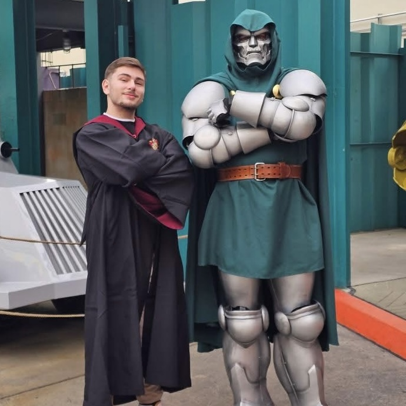

Since I can remember, I have always been a busy person. Over the years, I have acquired a range of skills and interests that have taught me valuable lessons about discipline, consistency, perseverance, and the enjoyment of progress.
In my free time, I make an effort to stay active. For nearly eight years, wrestling was a significant part of my life. It helped me maintain my physical health and develop a strong work ethic. Since my time on the team ended, my interest in weightlifting has grown, and it has quickly taken its place. When I'm not at the gym, you can find me working on my Mustang. I've invested a lot of time in that car, and it serves as a creative and relaxing project, allowing me to enjoy the results of my efforts.
I've had some accomplishments at work that I take pride in, such as receiving certification to teach self-defense. The certification has enabled me to instruct my fellow corrections corporals in an important area, and I enjoy helping others become more confident. Additionally, I am a member of the National Guard, where my knowledge grows every day, and I'm working towards my next goal of starting a bachelors degree.
There's still so much I'd like to do, so I strive to take things step by step and give my best effort each time. Every experience I've had, no matter how big or small, has contributed to the person I am becoming, and I am grateful for that.